🚗
Primeira habilitação B
Aprenda a dirigir com acompanhamento individual e aulas adaptadas ao seu ritmo.
Instrutores autônomos para quem está começando, quer aperfeiçoar a direção ou precisa recuperar a confiança para dirigir.
Nem todo mundo começa do mesmo lugar. Tem quem esteja começando do zero, quem já tenha habilitação e ainda não se sinta seguro, quem tenha medo de dirigir e quem simplesmente queira melhorar.
Na Magia, a aula começa exatamente onde você está. Sem pressa, sem receita pronta e com atenção de verdade.

Aulas personalizadas para cada fase do seu caminho.
Aprenda a dirigir com acompanhamento individual e aulas adaptadas ao seu ritmo.
Preparação para quem quer conquistar a liberdade sobre duas rodas.
Para quem possui habilitação, mas ainda não se sente seguro para dirigir sozinho.
Já dirige, mas quer melhorar seu domínio, técnica ou confiança ao volante?
Treine situações da prova prática antes do grande dia.
A altura do motociclista pode fazer toda a diferença para quem está aprendendo.
Por isso, a Magia investe em uma moto de baixa altura, proporcionando mais confiança e acessibilidade para pessoas de menor estatura.
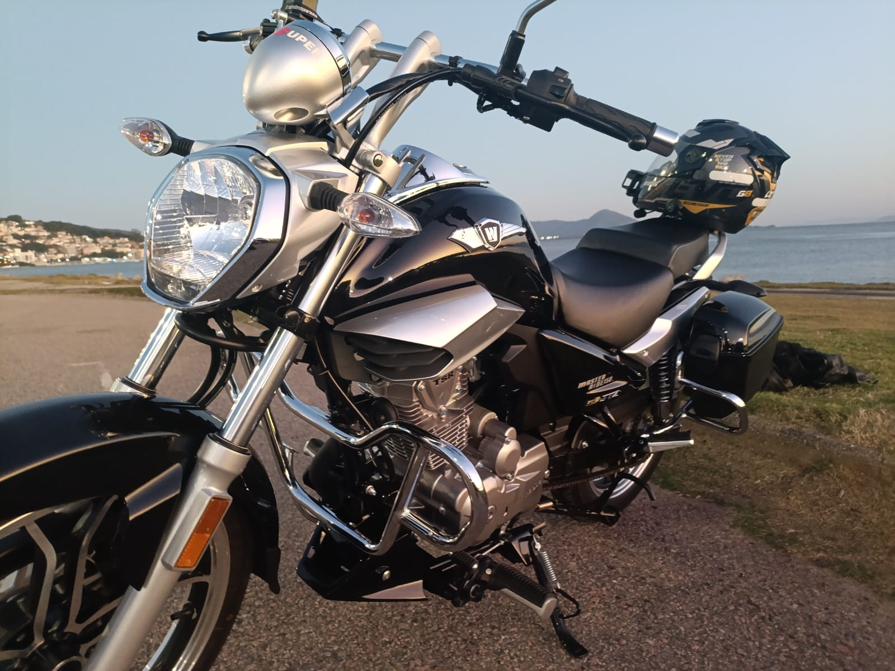
Cada aprovado carrega uma história. E a gente gosta de guardar esses momentos.
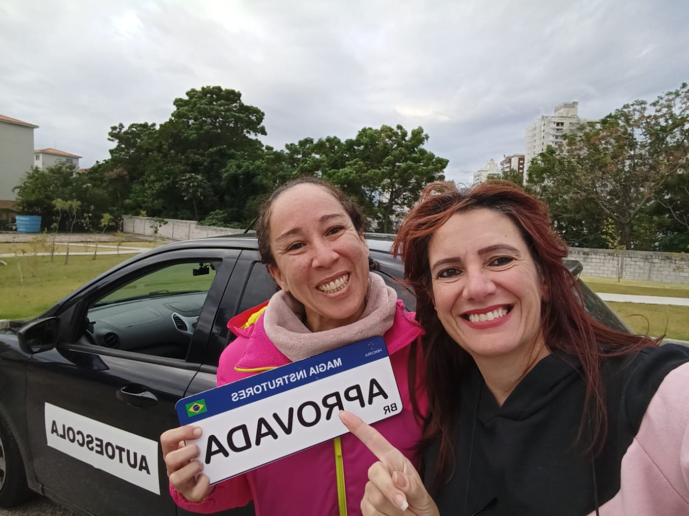
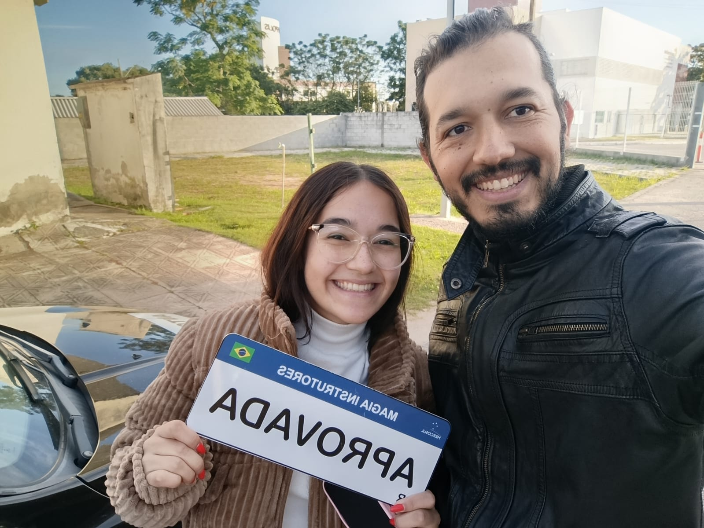
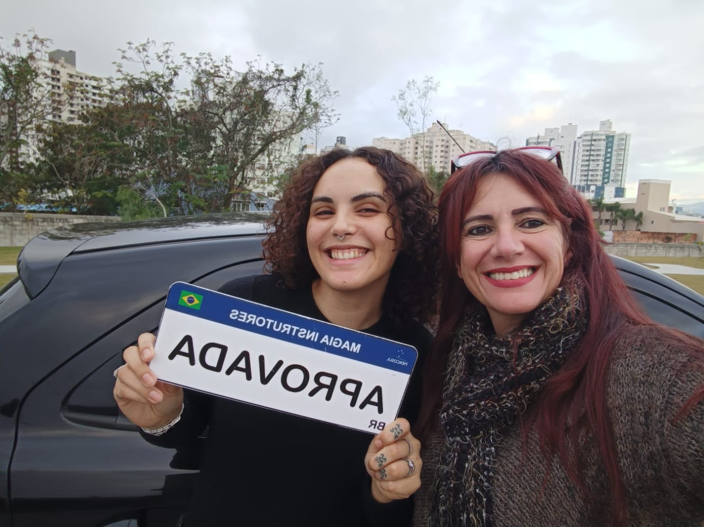
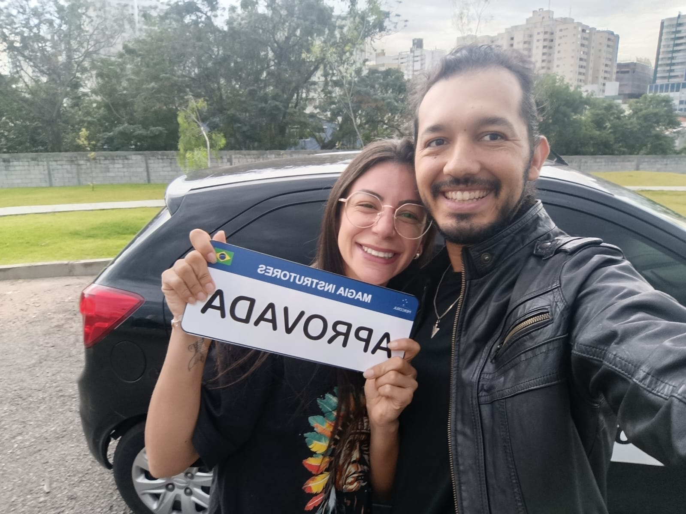
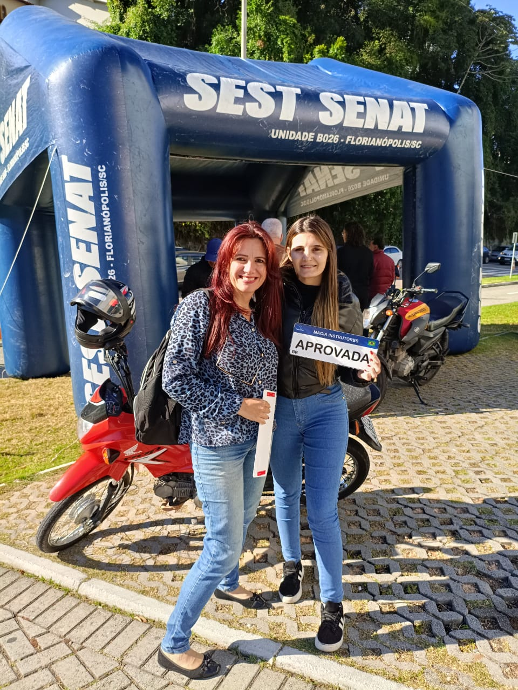
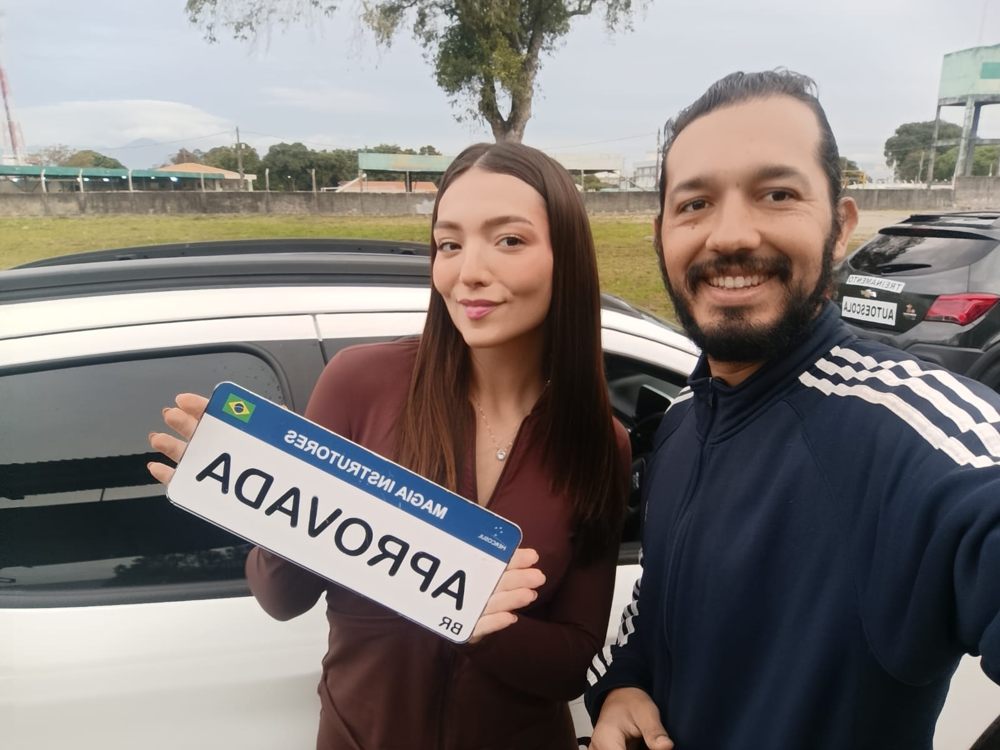
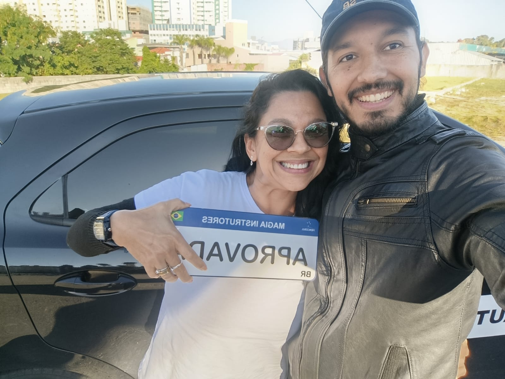
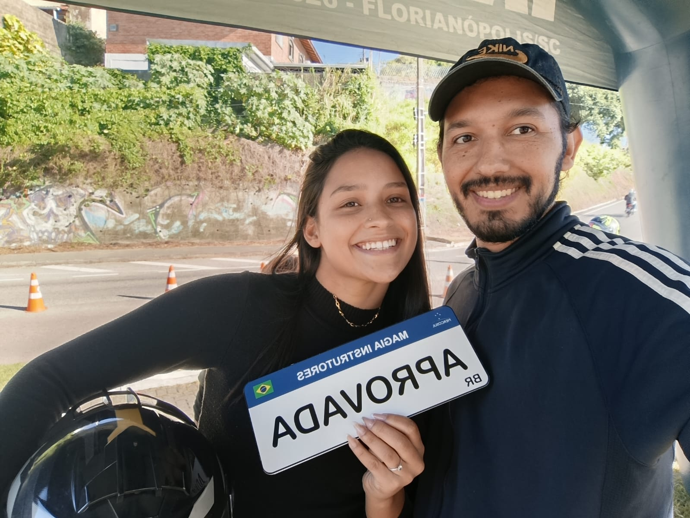
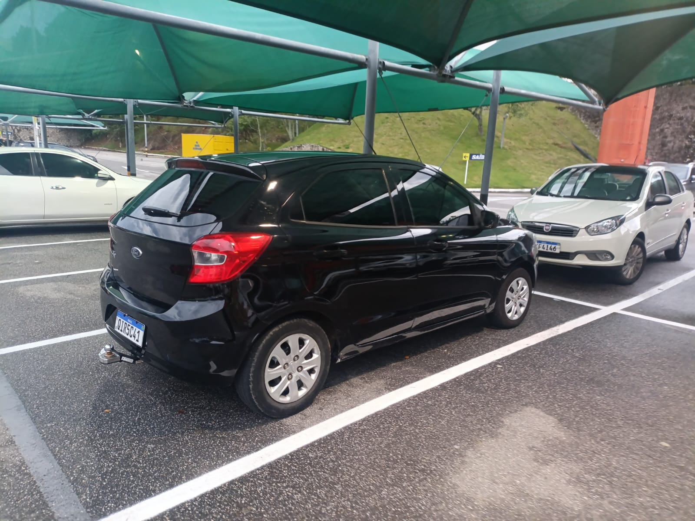
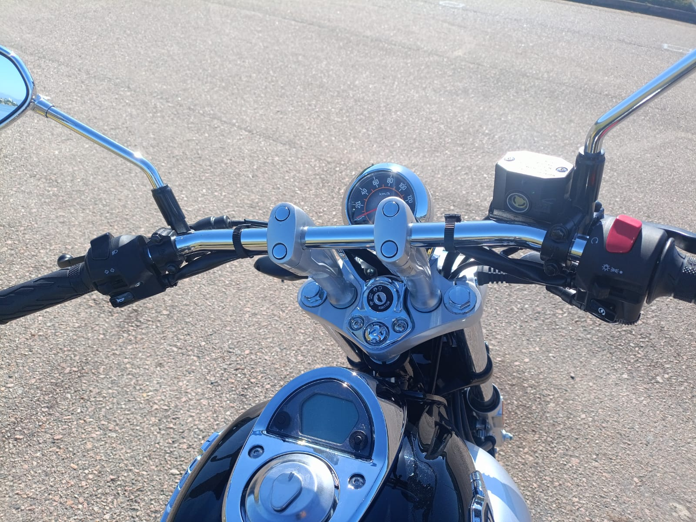
Acompanhe aprovados, dicas, aulas e os bastidores da Magia.
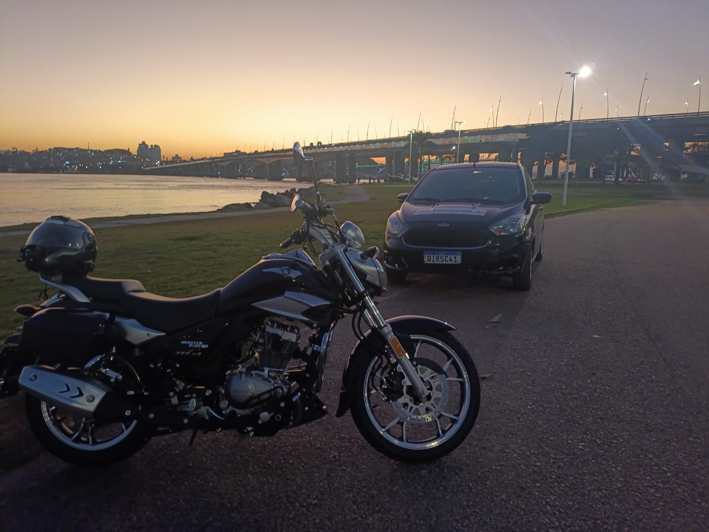
Ver no Instagram ↗Ver no Instagram ↗
Nesta versão visual, a galeria está preparada. A conexão automática com as publicações do Instagram será configurada na etapa de publicação.
Atendimento cuidadoso, explicações claras e muita atenção durante as aulas.
Me senti muito mais segura para dirigir. Recomendo pela paciência e pela didática.
Uma experiência muito diferente de tudo que eu já tinha imaginado para aprender a dirigir.
Os cards acima são uma prévia visual. Na publicação definitiva, conectaremos esta área ao Perfil da Empresa para carregar avaliações reais.
Informação também faz parte do caminho. Conteúdos sobre trânsito, CNH, carros, motos, mecânica e tudo o que envolve a vida sobre rodas.
Comportamento, segurança, sinalização e situações do dia a dia.
Habilitação, categorias, provas e informações para quem está começando.
Curiosidades, tecnologia, direção e cuidados com o seu veículo.
Pilotagem, segurança, equipamentos e o universo das duas rodas.
Explicações simples para entender melhor o que acontece no seu carro ou moto.
Textos e reflexões sobre pessoas, comportamento e a vida sobre rodas.
Sim. As aulas podem ser voltadas para aperfeiçoamento, retomada da confiança e necessidades específicas.
Florianópolis, São José, Palhoça e Biguaçu.
Sim. O atendimento é individual e planejado de acordo com o objetivo do aluno.
Sim. O foco é construir segurança gradualmente, respeitando o ritmo de cada pessoa.
Sim, trabalhamos com Categoria A e temos uma moto de baixa altura como diferencial.
Fale com a Magia pelo WhatsApp e consulte disponibilidade e valores.
Talvez seja alguém que ensine no seu ritmo.
Conheça a Magia.